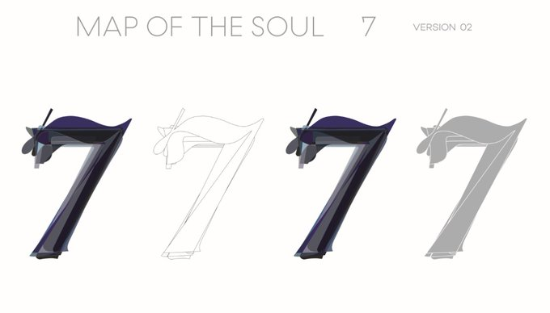
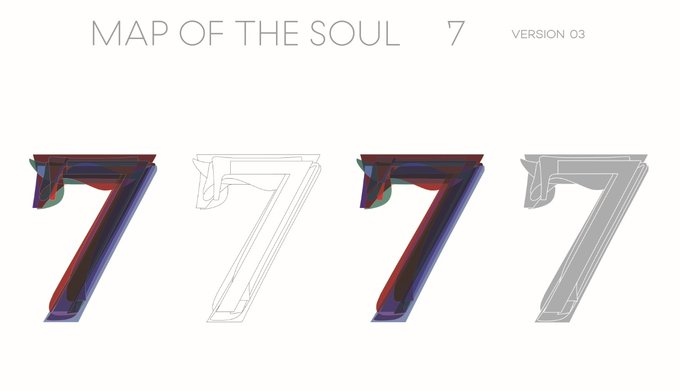

In the picture above meet the Designer duo & couple A ji-hye (left) & Jang joon-oh at their studio “Sparks.”
"They worked on the project by adding layers representing each bandmate based on their identity & personality." - Yim Hyun-Su, K-Pop Herald
"Version No. 1 drew inspirations from swans, representing a longing for perfection as well as vulnerability and innocence. " by (Sparks Edition/Big Hit Entertainment)
"Inspired by black swans, the second version strikes a darker tone and uses a curvy shape to represent the group’s glamorous shadows." by (Sparks Edition/Big Hit Entertainment)

"Straight lines were emphasized to give an impression of strength and depict a sense of duty in Version No. 3." by (Sparks Edition/Big Hit Entertainment)

"Each layer was arranged in a way to represent harmony and unity to represent the group’s ego and identity in Version No. 4." by (Sparks Edition/Big Hit Entertainment)